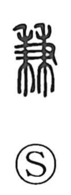

兼

Uncategorized
Kun: kaneru, awaseru | On: ken
to combine ・ to hold concurrently ・ in addition
Explanation
In the original graph, 兼 combines the hand sign (又) with two stalks of grain (禾), picturing a hand grasping both at once. By contrast, the character 秉 shows holding a single stalk; 兼 heightens that image to “holding together,” doing two things at the same time. From this picture arise the senses of putting or adding things together (awaseru) and, by extension, combining or carrying concurrent roles (kaneru).